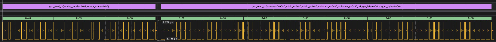

An implementation of the Joybus protocol used by N64 and GameCube controllers, for 32-bit microcontrollers.

Logic Analyzer Capture of a GameCube Controller Read
Features
- C implementation, no external dependencies (besides backend-specific SDKs)
- Provides both host mode and target mode functionality
- Host mode allows communication with N64/GameCube controllers from a microcontroller
- Target mode allows you to build custom N64/GameCube controllers using a microcontroller
- Near-ASIC timing accuracy for reliable communication
- Pre-built targets for N64 controllers and GameCube controllers
Supported Platforms
- Raspberry Pi Pico and Pico 2 (and other RP2xxx-based boards)
- Silicon Labs EFM32/EFR32 Series 1 and Series 2 MCUs
- Espressif ESP32 (ESP32-C3, ESP32-C6, ESP32-S3, ESP32-H2)
Examples
libjoybus is a key part of WavePhoenix, my open source implementation of a GameCube WaveBird receiver.
libjoybus is also used in my open-source 4-port USB GameCube controller adapter project.
You can find a number of additional examples in the examples/ directory.
Please let me know if you build something with libjoybus! I love seeing my projects used in the wild, and I'll consider adding it to the examples list!
Installation
CMake Based Projects (Pico SDK, etc)
Copy the library into your project, add it as a git submodule, or fetch it with FetchContent. Set your JOYBUS_BACKEND, for example rp2xxx for the Pico SDK, and link your executable against the joybus target:
# Set the backend (after pico_sdk_init() on the Pico SDK)
set(JOYBUS_BACKEND rp2xxx)
# Download libjoybus as part of a build, using FetchContent
include(FetchContent)
FetchContent_Declare(libjoybus GIT_REPOSITORY https://github.com/loopj/libjoybus.git GIT_TAG main)
FetchContent_MakeAvailable(libjoybus)
# ...or if bundling as a copy or git submodule
add_subdirectory(libjoybus)
# Link your executable against the joybus target
target_link_libraries(my_app pico_stdlib joybus)
See the Pico SDK examples for complete projects.
ESP32 (ESP-IDF)
For ESP-IDF projects, libjoybus is packaged as a component. From your project directory, add it as a git dependency:
idf.py add-dependency --git https://github.com/loopj/libjoybus.git libjoybus
Then add libjoybus to the REQUIRES list in your main/CMakeLists.txt:
idf_component_register(SRCS "main.c" INCLUDE_DIRS "." REQUIRES libjoybus)
The component manager downloads libjoybus on the next idf.py build. See the ESP-IDF examples for complete projects.
Silicon Labs EFM32/EFR32 (Simplicity SDK)
For Simplicity SDK projects, libjoybus is packaged as a Silicon Labs SDK extension.
Via Simplicity Studio
- Follow the Silicon Labs Guide to add this repository as an extension.
- Open your project's Software Components tab and install the libjoybus component.
Using SLC-CLI
Clone into your SDK's extension folder and trust the extension:
slc signature trust -extpath <path_to_sdk>/extension/libjoybus
Add to your project's .slcp file:
sdk_extension:
- id: libjoybus
version: 0.9.0
component:
- id: libjoybus
from: libjoybus
See the Gecko examples for complete projects.
Usage
You can find the full API documentation here, but here are some basic examples to get you started.
Initializing the Joybus
Before using libjoybus, you need to initialize the Joybus interface for your platform. Here's an example for the RP2040:
#include <joybus/joybus.h>
#include <joybus/backend/rp2xxx.h>
int main() {
return 0;
}
int joybus_rp2xxx_init(struct joybus_rp2xxx *rp2xxx_bus, struct joybus_rp2xxx_config config)
Initialize a RP2xxx Joybus instance.
Definition joybus.c:399
static struct joybus_rp2xxx_config joybus_rp2xxx_config_default(uint8_t gpio)
Build a RP2xxx config with default values.
Definition rp2xxx.h:82
#define JOYBUS(bus)
Macro to cast a backend-specific Joybus instance to a generic Joybus instance.
Definition bus.h:64
A RP2xxx Joybus instance.
Definition rp2xxx.h:57
A Joybus instance.
Definition bus.h:108
Communicating with Controllers
In host mode, libjoybus allows a microcontroller to communicate with N64 and GameCube controllers. This allows you to use input data from N64 and GameCube controllers in your projects.
#include <joybus/joybus.h>
void read_controller() {
if (rc < 0) {
return;
}
}
}
void main() {
while (1) {
read_controller();
sleep_ms(10);
}
}
@ JOYBUS_GCN_MOTOR_STOP
Stop the rumble motor.
Definition gcn_controller.h:108
@ JOYBUS_GCN_ANALOG_MODE_3
Substick X/Y and triggers full precision, analog A/B omitted.
Definition gcn_controller.h:97
#define JOYBUS_GCN_BUTTON_A
GameCube controller button bitmask flags.
Definition gcn_controller.h:18
int joybus_gcn_read(struct joybus *bus, enum joybus_gcn_analog_mode analog_mode, enum joybus_gcn_motor_state motor_state, struct joybus_gcn_controller_state *response)
Read the current input state of a GameCube controller.
Definition gcn.c:73
static int joybus_enable(struct joybus *bus, enum joybus_mode mode)
Enable the Joybus instance in the given mode.
Definition bus.h:139
@ JOYBUS_MODE_HOST
Host mode, sends commands and reads responses from a target device.
Definition bus.h:71
GameCube controller input/origin state.
Definition gcn_controller.h:43
Emulating a Controller
In target mode, libjoybus allows a microcontroller to act as an N64 or GameCube controller. This allows you to create custom controllers that can interface with N64, GameCube, and Wii consoles.
I've provided built-in targets for N64 controllers and GameCube controllers so you can just populate the input state and let libjoybus handle the rest.
#include <joybus/joybus.h>
void main() {
while (1) {
controller.input.buttons &= ~JOYBUS_GCN_BUTTON_MASK;
controller.input.stick_x = 200;
controller.input.stick_y = 200;
sleep_ms(10);
}
}
static void joybus_target_gcn_controller_init(struct joybus_target_gcn_controller *controller)
Initialize a GameCube controller target as a regular wired controller.
Definition gcn_controller.h:86
#define JOYBUS_TARGET(target)
Macro to cast a concrete Joybus target instance to a generic Joybus target instance.
Definition target.h:59
int joybus_attach_target(struct joybus *bus, struct joybus_target *target)
Attach a target to handle commands received in target mode.
Definition bus.c:3
@ JOYBUS_MODE_TARGET
Target mode, listens for commands from a host device and responds accordingly.
Definition bus.h:74
GameCube controller Joybus target.
Definition gcn_controller.h:47
Placing Code in RAM
Target replies are timing critical. A flash fetch or cache miss inside a command handler can delay the reply, so libjoybus places its latency-critical functions in RAM on every supported platform. A single-controller build uses under 1 KB of RAM for this.
Define JOYBUS_USE_RAM_FUNCS=0 in your build to keep everything in flash and save the RAM.
Application code that runs inside the reply path should be placed in RAM too, or a flash fetch there will undo the library's placement. Mark these functions with JOYBUS_RAM_FUNC:
- byte_received on a custom target
- Reset and motor callbacks on the built-in N64 and GameCube controllers
- read_block and write_block on a custom N64 pak
#include <joybus/attributes.h>
{
gpio_put(MOTOR_PIN, state);
}
#define JOYBUS_RAM_FUNC
Attributes for a latency-critical function, such as a target command handler.
Definition attributes.h:40
License
This project is licensed under the MIT License. See the [LICENSE](LICENSE) file for details.
 1.14.0
1.14.0